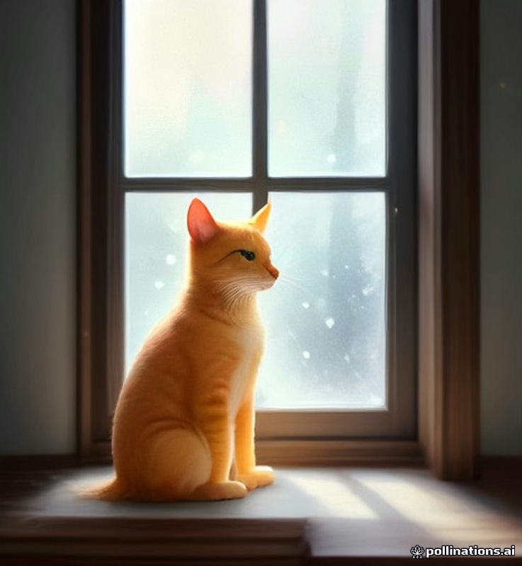
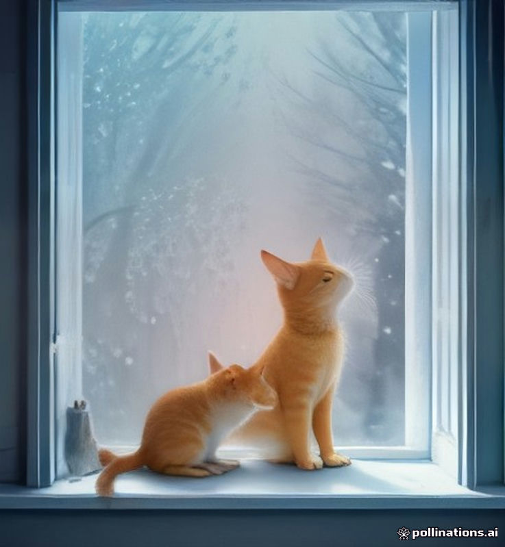
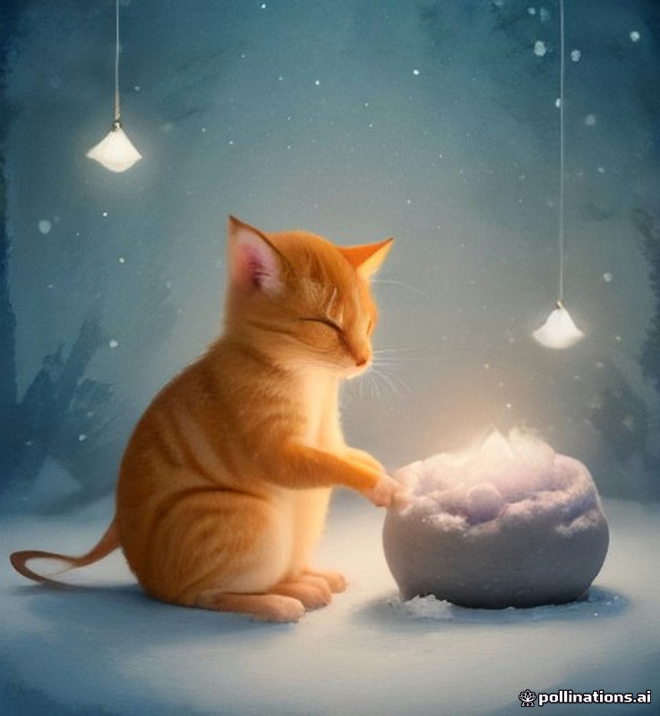
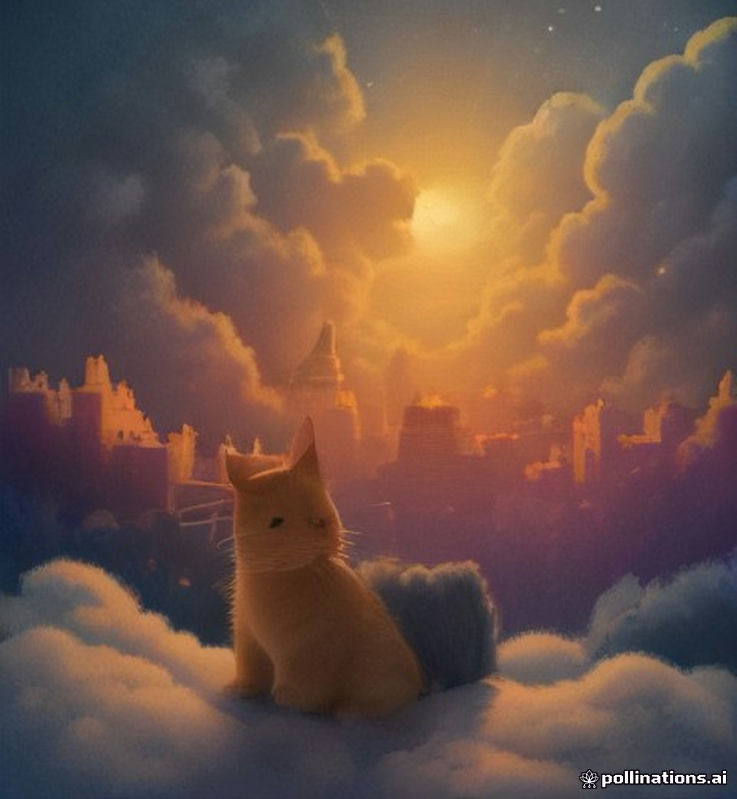

A cozy tale of frosted bakery windows and the quiet magic that keeps Loki's Town warm on a chilly day.

When the morning air turns crisp and grey, delicate crystal leaves bloom overnight. They stretch across the bakery glass in sparkling fern fronds and snowy petals, drawn by the quiet touch of winter's brush.

Pip reaches up a tiny paw to trace a frozen star. But these aren't just cold designs. They are tiny shields of spun silver, catching the pale winter sunlight and weaving it into a bright, snug blanket.
Inside, the oven hums a low, happy song, filling the air with sweet cinnamon and toasted oats. The warmth presses against the glass, making the frost flowers dance and shimmer with soft amber light.

Out in the plaza, the whole town feels the gentle glow. The cold stays outside, while the cozy magic wraps around every little house, keeping Loki's Town safe, snug, and full of heart.